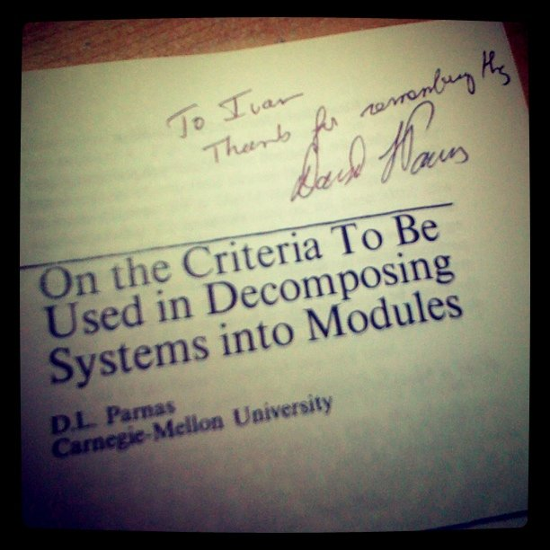

I've been to The Future of Software Engineering Symposium at ETH Zurich. It was amazing to meet in person some of the true legends of our field. Here's a random set of entertaining notes I took.
— Those are the books we'd like to have on our shelves. Some of us even read them. I didn't.
— “Requirements” is not a list. It's a predicate.
— …But the open source code I looked at is crap! (in response to Gamma's offer to learn good design from OSS projects)
— Did the people who spell well learn it from a spell checker? (re a verification tool driving the coding)
— Software engineering is in a much better shape than one would think after attending this conference.
— Everyone get the language they deserve.
— If you need a lot of versatile bug samples for your static analysis, simply take AspectJ.
— How do we solve anything fundamental in software engineering now? Everyone takes his tool of choice, like a hammer, and we together beat the problem until it's smashed.
— JUnit isn't an automated testing, it's just an automated tests running.
— Programmers live in a virtual world, without responsibility.
— The future isn’t what it used to be.
— For a breakthrough in software engineering we need something like what quantum physics is for physics; something where our intuition is of no value.
— Everyone keeps checking if his program is correct, while the answer is obvious: it isn't.
Such a fanboy :)

Published: 2010-11-23
Tagged: scratch conference quote